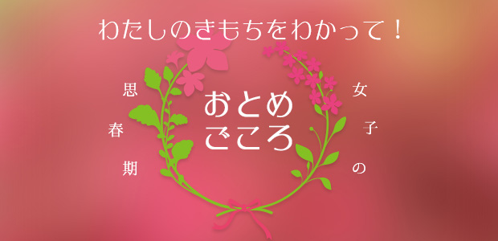

前回までは思春期の男の子の話が中心でした。
今回は女の子についてお話します。
思春期というのは「中2病」といわれるほど難しい時期ではあるのですが、男の子の場合はわりと単純でいくつかのパターンを押さえておけば対応はしやすい。経験上そんな気がします。
ところが女の子はそうはいかない。
その心理は複雑怪奇(笑)で一筋縄ではいかないというのが正直なところです。
塾で教えていた頃も若い男性講師などは、女の子のその時どきの言動に振り回され消耗してしまうことがよくありました。
というのも、女の子の方が自分の気持ちに正直で、いったん心を許すとトコトン信頼してくれるが、何らかの理由で（ささいなことでも）ヘソを曲げるとテコでも動かない側面があるからです。
イヤァ、実は私もずいぶんと手を焼いてきました。
特に女の子を叱ったり注意するときは、細心の心配りが必要なのです。
男の子なら「うるさい。おしゃべりを止めろ」とか「次はちゃんとやって来いよ」などストレートに叱れば済むわけですが、女の子に同じ言い方をすると反発を招くだけです。
下手すると「イヤな奴」というレッテルを貼られてお終いです。
翌日には女の子同士のネットワーク上で「あの先生はエコひいきする」「超陰険でイヤミな奴」というウワサが飛びかっているでしょう(笑)。
だから女の子に対しては叱るにせよほめるにせよ、その根拠（理由）を説明することが大切になってきます。
叱られ慣れている女の子の叱り方
以前こんなことがありました。
仮にA子（中2）さんとしておきましょう。
A子さんは授業中、よく周りに話しかけ集中しないので講師たちも「A子は態度がイマイチ～」と手を焼いていました。
あるとき、私の授業中でもなかなかおしゃべりを止めないので注意したことがあります。
そのときは止めるが、またすぐ隣の子に話しかけます。（周りの子も迷惑そうにしていた）
で、ついに私が「A、しゃべるのをやめろ！」と怒鳴ったわけです。
その後、彼女の提出した宿題（ルーズリーフ）にこんなことが書いてあるのです。
「先生はなんで私のことばかり叱るんですか？○○ちゃんだってしゃべっているのに…」
そこで私は彼女のルーズリーフに赤ペンで大体次のようなことを書きました。
「先生は君だけ叱っているわけではありません。授業中の私語は周りに迷惑がかかるし、君自身せっかく塾に来ている意味がないでしょ？ また君に特に目をつけているわけでもなく、今日は君が積極的におしゃべりしてたので叱ったのです。もし○○ちゃんが同じ態度なら○○ちゃんも叱ります。」
さらに次のような文言もつけ加えました。
「1つわかって欲しいのは、ここは塾だということです。学校と違って強制ではないのです。生徒はいつでも入れるし、いつでも辞められる。もし、先生が生徒の私語ひとつ注意できない、指導力がないということになったらどうなるか。あの塾は騒がしいとか先生がダメだとかいわれ評判が悪くなり生徒もやめていくかも知れない。先生はこの塾の責任者として、そういうことも考えなくてはならないのです。」
そして最後に
「先生方は50分の授業のために何時間も予習して一生懸命教えています。だから君も一生懸命聞いて欲しいのです。中2というこの大事な時期は二度とかえって来ないのです。次から一緒にがんばりましょう！」
私はこの長い文を彼女のルーズリーフの裏側に、心をこめてビッシリと書き込んだのです。
それまでA子を教えていた講師たちは皆、彼女の授業中のおしゃべりに悩まされていました。
「いくら怒ってもおしゃべりをやめないんですよ～」
なので私もA子をそろそろ何とかしなきゃと思っていた矢先だったのです。
そういう意味で、A子が「何で私ばっか叱るの？」と書いてきたことは私にとってチャンスと見えたのです。要するに彼女の方からコミュニケーションを求めてきたことを意味するからです。
A子さんは中2にしては派手な外見で、大人びた服装とマニキュア、さらに香水までつけて塾に来ていました。とうてい勉強しに来ているとは思えない格好！(笑)
つまり彼女は塾でも学校でも叱られていて、もしかしたら家でも叱られている可能性が濃厚なんです。ということは叱られ慣れているわけです。
ここで私が頭ごなしに叱ったとしても効果は薄い。
だから私は彼女の返信に、叱った理由をきちんと書きさらには「塾の立場」も書いたのです。
「塾の立場」まではふつう生徒に言うべきことではありません。
しかし私は直観的にそれを書くことが正しい気がしたのです。
上から目線で彼女の「誤り」を指摘することは簡単だし、そのような叱られ方に彼女は慣れている。事実今まで効果はなかった。
それならば、叱る理由をただ「お前のためだ」というお説教口調にするのではなく「塾の立場も考えて欲しい」と「自らの弱み」もさらけ出す。
正直に一個の人間として本心を明かすというスタンスです。
何しろ彼女の側からコミュニケーションを求めてきたのです。このチャンスは絶対に逃したくない(笑)
結果はもちろん大成功。
A子さん、わざわざ教務室にいる私のところまで来て「先生、読んだよ。アリガト。」と嬉しそうに言うのです。
「ああ、読んだくれたのか。じゃ、勉強がんばろう」
「ウン」
この「ウン」と言ったときのA子さんの満面の笑みが印象的でした。←意外と単純(笑)
実はA子さんには、後で分かったことですが当時こんな背景があったのです。
①家庭環境が複雑（父親が不在がち）
②学校で先生とうまくいっていない
③男の子の取り合い(笑)をめぐって上級生の女子集団からイジメにあっていた
マァ、彼女なりに勉強に集中できない事情があったわけです。
ここで問題なのは、大人はそんなA子さんを一方的に問題視して叱るばかりで彼女にとって「分かってくれる大人の不在」が、不安定の要因だったことです。
たまたま私が手紙の上にせよ、彼女を対等に「一個の人間として」接したことが思いのほか彼女の心に響いたのだと思います。
ともかく以後A子さんは授業中の態度が一変。おしゃべりは一切せず宿題忘れもなし。マジメな、勉強やる系女子(笑)に変身。その姿勢は中3になっても変わらず熱心な受験生を通したのです。
ただ残念ながら第一志望には届かず、第二志望の私立高校に進学しましたが…。
おもしろかったのは、高校へ入学してしばらく経ったある日、A子さんが塾に私を訪ねて来たときです。出てみると一人の男子高校生を従えています。
A子さん、例の満面の笑みで「先生、この人彼氏。カッコいいでしょ！」と紹介します。
横にいるそのジャニーズ系のカレシ、照れるでもなくヘラヘラ笑っているだけ。
A子さん、どうやら無事（？）高校デビューしたようです。
A子さんの例からわかること。
それは女の子はコミュニケーションが大事ということ。
それも一方通行ではなく、気持ちの交歓というか気持ちの交流。そのためには大人の側もある程度本音を明かす。上から目線の頭ごなしはいけない…など。
たとえば子どもがフテクサレていても、話し合うことを拒否していてもメゲてはいけません。手紙でも良いから、こちらも心の内をさらけ出して交流する姿勢こそが大事。
そして本気で相手のことを思う。すると女の子の方も「この人私の気持ちを分かってくれる」と感じるのです。
男同士なら最低限必要なことだけ伝え合うことが良好なコミュニケーションといえます。
だから男は「ごちゃごちゃ言わず結論を言え」とか「要するに何が言いたいの？」など、重要な情報（要点）に的を絞ろうとします。
しかし女の子（女性）を相手にするときは、このまさに「ゴチャゴチャ」した部分、細部の事情や感情の伝達こそが生命線だと心得なくてはならないのです。
そこをめんどうだと省いてしまうと、事態は余計めんどうな展開をみせてしまう。
しかし、女の子はひとたび納得し、信頼すると男以上に一生懸命気持ちを込めて勉強なり仕事なりに打ち込むものです。
その姿はまさに全身全霊という言葉にふさわしい。
私にはそう思えます。